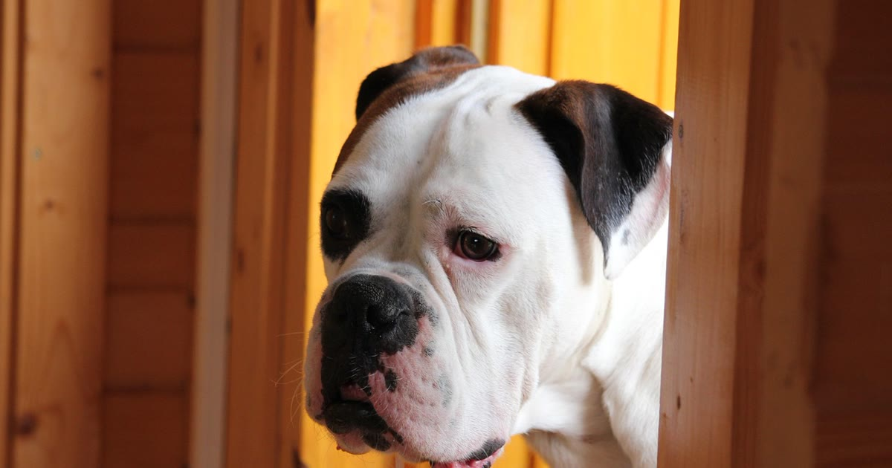

A instalação de uma porta eletrônica para pet varia conforme o tipo de superfície — madeira, vidro, alumínio ou alvenaria — mas segue uma lógica geral parecida na maioria dos modelos.
Muitos modelos são projetados para não exigir cortes permanentes em portas de vidro de correr, encaixando-se em um painel específico — mas quando o corte é necessário, recomenda-se broca diamantada e acompanhamento profissional especializado em vidro, dado o risco de trincar o material.
veja o guia completo sobre instalação em vidro
Costuma ser mais simples que em vidro, já que o corte não tem risco de trincar o material — mas ainda exige atenção ao alinhamento do molde e à resistência estrutural da porta.
Posicionar a altura errada em relação ao porte do pet e não testar o sistema de identificação antes de liberar o uso são os erros mais citados por quem já instalou esse tipo de porta.
A instalação em si costuma levar poucas horas, mas o tipo de superfície muda bastante a complexidade — vidro exige mais cuidado (ou um modelo sem corte), enquanto madeira e alumínio são mais diretos. Testar o sistema de identificação antes de liberar o uso evita boa parte dos problemas iniciais.
volte ao guia completo de porta eletrônica para pet
Escrito pela Equipe Smart Pet Gadgets, redação especializada em comparativos de produtos pet no mercado brasileiro. Veja nossa política editorial e como verificamos as fontes citadas neste artigo.
🐾 Confira o preço e a disponibilidade atual no Mercado Livre.
Ver no Mercado Livre →Link de afiliado: podemos receber uma comissão por compras feitas através deste link, sem custo adicional para você.
Nildo Alves — curadoria de produtos pet no Smart Pet Gadgets. Testa e pesquisa produtos para cães e gatos, cruzando especificações de fabricante com boas práticas veterinárias e dados de mercado.
Sobre o Smart Pet Gadgets · Contato · Política editorial e de afiliados